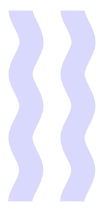

<!DOCTYPE html>

<!-- Meta  -->

<html>
  <head>
  <html lang="en">
  <title>Hiroki Murakami</title>
  <meta charset="UTF-8">
  <meta name="viewport" content="width=device-width, initial-scale=1">
  <meta name="description" content="Hiroki is a product and experience strategist in Brooklyn, NY">
  <meta name="keywords" content="Hiroki, Murakami, strategist, strategy, consulting">
  <meta name="author" content="Hiroki Murakami">
  <link rel="icon" type="image/png" href="/media/favicon.png"/>

  <!-- CDNs -->

  <script src="https://ajax.googleapis.com/ajax/libs/jquery/3.5.1/jquery.min.js"></script>
  <script src="https://cdn.jsdelivr.net/npm/simple-parallax-js@5.6.1/dist/simpleParallax.min.js"></script>
  <script src="http://ajax.googleapis.com/ajax/libs/jquery/1.9.0/jquery.min.js"></script>
  <script src="tabletop.js"></script>
  <script src="nowplaying.js"></script>

  <!-- Fonts -->

  <link rel="stylesheet" href="https://www.w3schools.com/w3css/4/w3.css">
  <link rel="stylesheet" href="https://fonts.googleapis.com/css2?family=Open+Sans:wght@300">
  <link rel="stylesheet" href="https://fonts.googleapis.com/css2?family=Yeseva+One">
  <link rel="stylesheet" href="https://fonts.googleapis.com/css2?family=Inconsolata">

  <style>

  body,a,a:hover,h1,h2,h3,h4,h5,h6 {
    cursor: url("media/cursor.png"), default;
  }

  @media (max-width: 768px) {
      #mySidebar {
          display: none;
      }
  }

  .parallax, .parallax2, .parallax3, .parallax4, .parallax5, .parallax6, .parallax7, .parallax8, .parallax9, .parallax10 {
    position: absolute;
    z-index: -1:
  }

    body {

    <!-- Gradient background -->
    <!-- credit: https://cssgradient.io -->

      background-color: none;
      background-image: radial-gradient( circle farthest-corner at 10% 20%,  rgba(255,229,168,1) 0%, rgba(251,174,222,1) 100.7% );
    }

    .w3-half img{margin-bottom:-6px;margin-top:16px;opacity:0.8;cursor:pointer}
    .w3-half img:hover{opacity:1}

    p {
      font-family: 'Open sans', sans-serif;
      font-size: 21px;
    }

    h1 {
      font-family: 'Yeseva One', sans-serif;
      font-size: 99px;
      line-height: normal;
    }

    @media only screen and (max-width: 768px) {
      h1 {
        font-size: 60px;
      }
    }

    h2 {
      font-family: 'Open sans', sans-serif;
      font-size: 18px;
    }

    h3 {
      font-family: 'Inconsolata', monospace;
      font-size: 16px;
    }

    h4 {
      font-family: 'Inconsolata', monospace;
      font-size: 12px;
    }

    h5 {
      font-family: 'Yeseva One', sans-serif;
      font-size:21px;
    }

    h6 {
      font-family: 'Open sans', sans-serif;
      font-size: 16px;
    }

    table {
      border-collapse: collapse;
      width: 100%;
    }

    table, th, td {
      padding: 5px;
      text-align: left;
      font-family: "Inconsolata", monospace;
      font-size: 16px;
    }

    .backlog-table {
      border: 1px solid black;
    }

    .work-table {
      width:100%;
      text-align: left;
      vertical-align: top;
    }

    .work-grid{
      display:grid;
      grid-template-columns: 200px 200px 200px;
      justify-content: start;
      grid-gap: 5%;
    }

    @media only screen and (max-width: 768px) {
      .work-grid {
        display: grid;
        grid-template-columns: 1fr;
        padding: 1em;
        grid-row-gap: 0px;
      }
    }

    .clients-grid{
      display:grid;
      grid-template-columns: 20% 20% 20% 20%;
      justify-content: start;
      grid-gap: 5% 5%;
    }


    @media only screen and (max-width: 768px) {
      .clients-grid {
        display: grid;
        grid-template-columns: 1fr 1fr;
        padding: 1em;
        grid-row-gap: 0px;
      }
    }

    .music-grid{
      display:grid;
      grid-template-columns: 33% 33%;
      justify-content: start;
      grid-gap: 0% 2.5%;
    }

    @media only screen and (max-width: 768px) {
      .music-grid {
        display: grid;
        grid-template-columns: 1fr;
        padding: 0em;
        grid-row-gap: 0px;
      }
    }

    .clients-item {
      font-family: "Inconsolata", monospace;
      font-size: 16px;
      font-weight: bold;
    }

    .weather {
      position: relative;
      width:100%;
      bottom: 0px;
      left: 16px;
    }

    .nowplaying {
      position: absolute;
      width:100%;
      bottom: 24px;
      left: 32px;
    }

    #table-container {
      width: 50%;
      height: 200px;
      overflow: scroll;
      position: static;
    }

    @media only screen and (max-width: 768px) {
      #table-container {
      width:80%;
      }
    }

    #nav {
      overflow: hidden;
    }

    <!-- Circle text animation -->
    <!-- credit: Matt S Rinc [mattsrinc on codepen]-->

    #container { margin: 0%; }

    #circle { position: top-left; width: 100%; padding-bottom: 100%; overflow: hidden; }

    #circle text { font-family: 'Yeseva One', Arial; font-size: 36.5px; font-weight: bolder; }

    #circle svg { position: absolute; left: 0; top: 0; width: 100%; height: 350px;

      -webkit-animation-name: rotate;
         -moz-animation-name: rotate;
          -ms-animation-name: rotate;
           -o-animation-name: rotate;
              animation-name: rotate;
      -webkit-animation-duration: 15s;
         -moz-animation-duration: 15s;
          -ms-animation-duration: 15s;
           -o-animation-duration: 15s;
              animation-duration: 15s;
      -webkit-animation-iteration-count: infinite;
         -moz-animation-iteration-count: infinite;
          -ms-animation-iteration-count: infinite;
           -o-animation-iteration-count: infinite;
              animation-iteration-count: infinite;
      -webkit-animation-timing-function: linear;
         -moz-animation-timing-function: linear;
          -ms-animation-timing-function: linear;
           -o-animation-timing-function: linear;
              animation-timing-function: linear;

    }

    @-webkit-keyframes rotate {
        from { -webkit-transform: rotate(360deg); }
        to { -webkit-transform: rotate(0); }
    }
    @-moz-keyframes rotate {
        from { -moz-transform: rotate(360deg); }
        to { -moz-transform: rotate(0); }
    }
    @-ms-keyframes rotate {
        from { -ms-transform: rotate(360deg); }
        to { -ms-transform: rotate(0); }
    }
    @-o-keyframes rotate {
        from { -o-transform: rotate(360deg); }
        to { -o-transform: rotate(0); }
    }
    @keyframes rotate {
        from { transform: rotate(360deg); }
        to { transform: rotate(0); }
    }

  </style>
</head>

</html>

<!-- Start of body -->

<body>

  <!-- Sidebar/menu -->

  <div id="nav">
    <nav class="w3-sidebar w3-transparent w3-collapse w3-top w3-large w3-padding" style="overflow:hidden;z-index:3;width:300px;font-weight:bold;border-right:1px solid black" id="mySidebar"><br>
    <a href="javascript:void(0)" onclick="w3_close()" class="w3-button w3-hide-large w3-display-topleft" style="width:100%;font-size:18px"></a>

  <!-- Text circle animation -->

    <div id="circle">
    <svg version="1.1" xmlns="http://www.w3.org/2000/svg" xmlns:xlink="http://www.w3.org/1999/xlink" x="0px" y="0px" width="100px" height="100px" viewBox="0 0 300 300" enable-background="new 0 0 300 300" xml:space="preserve">
        <defs>
            <path id="circlePath" d="M 150, 150 m -60, 0 a 60,60 0 0,1 120,0 a 60,60 0 0,1 -120,0 "/>
        </defs>
        <circle cx="150" cy="100" r="75" fill="none"/>
        <g>
            <use xlink:href="#circlePath" fill="none"/>
            <text fill="#000">
                <textPath xlink:href="#circlePath">hiroki • murakami • </textPath>
            </text>
        </g>
    </svg>
    </div>

    <div class="w3-bar-block">
      <h5>
      <a href="#home" onclick="w3_close()" class="w3-bar-item w3-button w3-hover-black">Home</a>
      <a href="#bot" onclick="w3_close()" class="w3-bar-item w3-button w3-hover-black">Hiroki bot</a>
      <a href="#work" onclick="w3_close()" class="w3-bar-item w3-button w3-hover-black">Work</a>
      <a href="#music" onclick="w3_close()" class="w3-bar-item w3-button w3-hover-black">Music</a>
    </h5>
    </div>
    <br>
    <div class="weather">
      <h4 id="brooklyn"></h4>
      <h4 id="seattle"></h4>
      <h4 id="tokyo"></h4>
      <h4> 🎵 now playing <a id="tracktitle"></a>
  		<br>	by <a href="#" id="trackartist"></a></h4>
  </nav>
</div>

<!-- !PAGE CONTENT! -->

<div class="w3-main" style="margin-left:340px;margin-right:40px">

  <!-- !Parallax shapes! -->

  
    <script>
    var image = document.getElementsByClassName('parallax');
    new simpleParallax(image, {
     delay: 0,
     orientation: 'down right',
     scale: 1.35,
     overflow: true,
    });
    </script>

  
    <script>
    var image = document.getElementsByClassName('parallax2');
    new simpleParallax(image, {
     delay: 0,
     orientation: 'up',
     scale: 1.25,
     overflow: true,
    });
    </script>

  
    <script>
    var image = document.getElementsByClassName('parallax3');
    new simpleParallax(image, {
     delay: 0,
     orientation: 'up left',
     scale: 2,
     overflow: true,
    });
    </script>

  
    <script>
    var image = document.getElementsByClassName('parallax4');
    new simpleParallax(image, {
     delay: 0,
     orientation: 'down',
     scale: 1.3,
     overflow: true,
    });
    </script>

  
    <script>
    var image = document.getElementsByClassName('parallax5');
    new simpleParallax(image, {
     delay: 0,
     orientation: 'right',
     scale: 1.5,
     overflow: true,
    });
    </script>

  
    <script>
    var image = document.getElementsByClassName('parallax6');
    new simpleParallax(image, {
     delay: 0,
     orientation: 'up',
     scale: 1.3,
     overflow: true,
    });
    </script>

  
    <script>
    var image = document.getElementsByClassName('parallax7');
    new simpleParallax(image, {
     delay: 0,
     orientation: 'up left',
     scale: 1.4,
     overflow: true,
    });
    </script>

  
    <script>
    var image = document.getElementsByClassName('parallax8');
    new simpleParallax(image, {
     delay: 0,
     orientation: 'right',
     scale: 1.2,
     overflow: true,
    });
    </script>

    
      <script>
      var image = document.getElementsByClassName('parallax9');
      new simpleParallax(image, {
       delay: 0,
       orientation: 'up',
       scale: 3.3,
       overflow: true,
      });
      </script>

    
      <script>
      var image = document.getElementsByClassName('parallax10');
      new simpleParallax(image, {
       delay: 0,
       orientation: 'bottom',
       scale: 1.2,
       overflow: true,
      });
      </script>


  <!-- Section 1 -->

  <div class="w3-container" style="margin-top:80px;margin-bottom:10px;border-bottom:1px solid black" id="home">
    <h1>Hello world 👋🏼</h1>
      <h3>VERSION 3.04 / LAST UPDATE 10.18.2020</h3>
      <p>As an experiment, I've been coding this one-page website myself on AWS S3 using W3 plus many other open-source references. Welcome and stay a while!
      <br><br>
      In general, I think the web should be more spontaneous, free, and decentralized. I've been focused on learning fun CSS and jQuery tricks and down the road I'm interested in decentralized self-hosting.
      <br><br>
      Soon I'll share Github documentation on how I built this website to share with other non-coders as well as make it easy for actual coders to share suggestions and ideas.
      </p>
      <br>
      <div id="table-container">
        <table>
          <tr class="backlog-table">
            <th class="backlog-table">BACKLOG</th>
            <th><a href="https://en.wikipedia.org/wiki/Planning_poker">LOE</a></th>
          </tr>
          <tr>
            <td class="backlog-table">Mobile nav</td>
            <td class="backlog-table">20</td>
          </tr>
          <tr>
            <td class="backlog-table">Cursor hover effect</td>
            <td class="backlog-table">8</td>
          <tr class="backlog-table">
            <td class="backlog-table">HTTPS</td>
            <td class="backlog-table">13</td>
          </tr>
          <tr>
            <td class="backlog-table">ADA accessability audit</td>
            <td class="backlog-table">13</td>
          </tr>
          <tr>
            <td class="backlog-table">Custom scroll bar</td>
            <td class="backlog-table">5</td>
          </tr>
          <tr>
            <td class="backlog-table">Randomize background colors</td>
            <td class="backlog-table">13</td>
          </tr>
          <tr>
            <td class="backlog-table">404 page</td>
            <td class="backlog-table">3</td>
          </tr>
          <tr>
            <td class="backlog-table">Hover state images</td>
            <td class="backlog-table">13</td>
          </tr>
          <tr>
            <td class="backlog-table">Clippy?</td>
            <td class="backlog-table">100</td>
          </tr>
        </table>
    </div>
        <br>
  </div>

  <!-- TABLETOP -->
  <div class="w3-container" style="margin-top:10px;margin-bottom:10px;border-bottom:1px solid black" id="bot">
    <h3>HIROKI LOCATOR BOT SAYS:</h3>
    <h1>I'm currently ...</h1>
    <h1 id="tweet" class="banner-header"></h1>
    <p>Hiroki locator bot is a homegrown and incredibly bootstrapped way to automatically put my real-time, personally identifiable information on the web! It uses a combination of IFTTT, Twitter, and <a href="https://github.com/jsoma/tabletop">Tabletop.js</a>.
    <br><br>
</div>

  <!-- Section 2 -->

  <div class="w3-container" style="margin-top:10px;margin-bottom:10px;border-bottom:1px solid black" id="work">

    <h1>I'm a product & ux strategist</h1>
    <p>I’m a full-stack strategist that helps organizations change by thinking about people, ideas, and technology in new ways.
      Right now, I help lead digital product innovation teams at Sapient NYC.
      <br><br>
      Where I've been:
    </p>

    <!-- Employers grid -->

    <div class="work-grid">
     <div>
       <table class='work-table'>
       <tr>
         <th style="width:10%">⇢</th>
         <th>Publicis Sapient</th>
       </tr>
       <tr>
         <td> </td>
         <td>Manager, Customer Experience & Innovation Consulting</td>
       </tr>
      </table>
    </div>
    <div>
      <table class='work-table'>
      <tr>
        <th style="width:10%">⇢</th>
        <th>Deutsch</th>
      </tr>
      <tr>
        <td> </td>
        <td>Strategy Director</td>
      </tr>
     </table>
   </div>
   <div>
     <table class='work-table'>
     <tr>
       <th style="width:10%">⇢</th>
       <th>Hillary for America</th>
     </tr>
     <tr>
       <td> </td>
       <td>Senior Digital Strategist</td>
     </tr>
    </table>
    </div>
  </div>
  <br>

  <!-- Capabilities grid -->

  <p>What I do:</p>
    <div class="work-grid">
     <div>
       <table class='work-table'>
       <tr>
         <th style="width:10%">⇢</th>
         <th>Processes I use</th>
       </tr>
       <tr>
         <td> </td>
         <td>Design thinking<br>Lean startup<br>Jobs to be done<br>Scaled agile framework</td>
       </tr>
      </table>
    </div>
    <div>
      <table class='work-table'>
      <tr>
        <th style="width:10%">⇢</th>
        <th>Artifacts I make</th>
      </tr>
      <tr>
        <td> </td>
        <td>Journey maps<br>Vision & value statements<br>Backlogs & roadmaps</td>
      </tr>
     </table>
     </div>
    <div>
      <table class='work-table'>
      <tr>
        <th style="width:10%">⇢</th>
        <th>Research chops</th>
      </tr>
      <tr>
        <td> </td>
        <td>Ethnographies<br>Prototyping<br>Customer co-creation</td>
      </tr>
     </table>
   </div>
  </div>
  <br>

  <!-- Clients grid -->

  <p>Who I've worked with:</p>
    <div class="clients-grid">
      <div class="clients-item">⇢ Anheuser Busch</div>
      <div class="clients-item">⇢ Citi</div>
      <div class="clients-item">⇢ Comcast</div>
      <div class="clients-item">⇢ CVS</div>
      <div class="clients-item">⇢ eBay</div>
      <div class="clients-item">⇢ Energizer</div>
      <div class="clients-item">⇢ Everytown Gun Safety</div>
      <div class="clients-item">⇢ GE</div>
      <div class="clients-item">⇢ Hillary Clinton</div>
      <div class="clients-item">⇢ Johnson & Johnson</div>
      <div class="clients-item">⇢ Mastercard</div>
      <div class="clients-item">⇢ PNC</div>
      <div class="clients-item">⇢ Samsung</div>
      <div class="clients-item">⇢ Siemens</div>
      <div class="clients-item">⇢ Verizon</div>
    </h3>
    </div>
    <br><br><br>

</div>
  <!-- Section 3 -->

  <div class="w3-container" style="margin-top:10px;margin-bottom:10px;" id="music">
    <h1>I sometimes play techno music</h1>
    <br>
    <p><a href="https://www.instagram.com/fastcaj/">FastCasual</a> is an audio-visual DJ project by my wife <a href="https://www.minamir.com/">Mina Mir</a> and I.
      After growing up with techno music and aesthetics, I finally decided to start playing it for others.
    <br><br>
    Some of our latest things:
    <br>
    <div class="music-grid">
      <div>
        <h3>Mix 1</h3>
        <iframe width="100%" height="300" scrolling="no" frameborder="no" allow="autoplay" src="https://w.soundcloud.com/player/?url=https%3A//api.soundcloud.com/tracks/748798627&color=%23000000&auto_play=false&hide_related=false&show_comments=true&show_user=true&show_reposts=false&show_teaser=true&visual=true"></iframe><div style="font-size: 10px; color: #cccccc;line-break: anywhere;word-break: normal;overflow: hidden;white-space: nowrap;text-overflow: ellipsis; font-family: Interstate,Lucida Grande,Lucida Sans Unicode,Lucida Sans,Garuda,Verdana,Tahoma,sans-serif;font-weight: 100;"></div>
      </div>

      <div>
        <h3>Mix 2</h3>
        <iframe width="100%" height="300" scrolling="no" frameborder="no" allow="autoplay" src="https://w.soundcloud.com/player/?url=https%3A//api.soundcloud.com/tracks/843362572&color=%23000000&auto_play=false&hide_related=false&show_comments=true&show_user=true&show_reposts=false&show_teaser=true&visual=true"></iframe><div style="font-size: 10px; color: #cccccc;line-break: anywhere;word-break: normal;overflow: hidden;white-space: nowrap;text-overflow: ellipsis; font-family: Interstate,Lucida Grande,Lucida Sans Unicode,Lucida Sans,Garuda,Verdana,Tahoma,sans-serif;font-weight: 100;"></div>
      </div>

      <div>
        <h3>At home playlist</h3>
        <iframe src="https://open.spotify.com/embed/playlist/2tZ91C620Z4VsbUjR6ZdqT" width="100%" height="300" frameborder="0" allowtransparency="true" allow="encrypted-media"></iframe>
      </div>
    </div>

    <br>

  </div>

  <div class="w3-container" style="margin-top:10px;margin-bottom:10px;border-top:1px solid black" id="footer">
    <h3>P.S. not all who wander are lost</h3>
  </div>

<!-- End page content -->

  </div>
</div>

    <script src='https://cdnjs.cloudflare.com/ajax/libs/tabletop.js/1.5.1/tabletop.min.js'></script>

</body>
</html>
